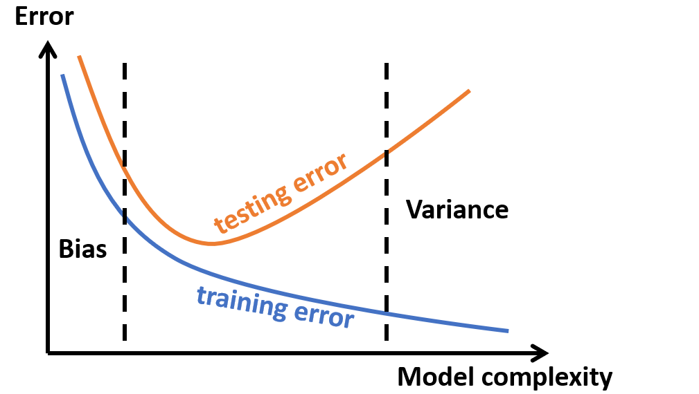

Steps for fitting a model
(1) Propose a model in terms of response variable, explanatory variables and residual variables.
(2) Specify/define a criterion for judging different estimators.
(3) Characterize the best estimator and apply it to the given data.
(4) Check the assumptions in (1).
(5) If necessary modify model and/or assumptions and go to (1).
Goodness of fit
$$\sum_i(y_i-\bar y)^2=\sum_i(y_i-\hat y_i)^2 + \sum_i(\hat y_i-\bar y)^2$$
$$\mathrm{TSS}=\mathrm{RSS}+\mathrm{FSS}$$
For OLS: \(\bar y=\frac{1}{n}\sum_i y_i=\frac{1}{n}\sum_i \hat y_i\)
For regression through the origin: \(\bar y=0\)
$$ R^2= \frac{\textrm{FSS}}{\textrm{TSS}}=1-\frac{\textrm{RSS}}{\textrm{TSS}}$$
Adjusted R-squared:
$$R^2_{\textrm{Adj}} = 1-\frac{\textrm{RSS}/\mathrm{df}_\textrm{R}}{\textrm{TSS}/\mathrm{df}_\textrm{T}}$$
Least Squares
minimizes residual sum of square (RSS)
$$ \mathbf{Y} = \mathbf{X} \beta + \epsilon$$
\(\mathbf{X}\): \(n\times p\) data matrix with \(n\) samples and \(p\) features.
If intercept is included, the first column is all ones.
\(\mathbf{Y}\): \(n\times1\) response variable.
\(\epsilon\): \(n\times1\) residual (error) variable with covariance matrix \(\Sigma\).
Ordinary Least Squares (OLS): \(\Sigma=\sigma^2\mathbf{I}\)
$$ \hat{\beta} = (\mathbf{X}^T\mathbf{X})^{-1}\mathbf{X}^T\mathbf{Y}$$
$$ \hat{\mathbf{Y}} = H\mathbf{Y}\;\; \textrm{with}\;\; H=\mathbf{X}(\mathbf{X}^T\mathbf{X})^{-1}\mathbf{X}^T$$
if \(\mathbf{X}\) contains intercept, then \(H\cdot1=1\).
\(H\) is a projection matrix.
$$\hat{\sigma}^2 = \frac{1}{n-p}\textrm{RSS}\;\;b.c.\;\;\mathrm{Tr}\{H\}=p$$
Generalized Least Squares (GLS):
$$ \hat{\beta} = (\mathbf{X}^T\Sigma^{-1}\mathbf{X})^{-1}\mathbf{X}^T\Sigma^{-1}\mathbf{Y}$$
Can be obtained by transforming to OLS.
Gauss-Markov Theoremassumptions:
linear relationship
zero mean, constant variance, uncorrelated residuals
theorem:
Under the Gauss-Markov assumptions, the OLS estimator has the smallest (Best) variance among all Linear Unbiased
Estimators (BLUE).
Generalization:
GLS is still BLUE.
the statistical assumption is on the conditional distribution of \(\mathbf{Y}\)
given \(\mathbf{X}\). So when we evaluate expectations, only \(y_i\)'s are random and \(x_i\)'s are
treated as given, non-random constants.
$$E[\hat{\beta}] = \beta$$
$$\mathrm{Var}[\hat{\beta}] = (\mathbf{X}^T\Sigma^{-1}\mathbf{X})^{-1}$$
for simple linear regression with \(\mathbf{X}=[1, \mathbf{Z}]\)
$$ (\mathbf{X}^T\mathbf{X})^{-1} =
\begin{pmatrix}
\frac{1}{n}+\bar{Z}S^{-1}\bar{Z}^T & -\bar{Z} S^{-1} \\
-S^{-1}\bar{Z}^T & S^{-1}
\end{pmatrix}$$
\(S=(\mathbf{Z}-1_{n\times1}\bar{Z})^T(\mathbf{Z}-1_{n\times1}\bar{Z})
=\mathbf{Z}^T\mathbf{Z}-n\bar{Z}^T\bar{Z}\)
\(\bar{Z}=\frac{1}{n}1_{1\times n} \mathbf{Z}\)
Bias-Variance Tradeoff
The bias–variance dilemma or problem is the conflict in trying to simultaneously
minimize bias and variance.

Bias–variance decomposition of squared error for true data \(y=f(x)+\epsilon(x)\) and model \(\hat f(x)\)
$$\begin{split}E[\textrm{err}] & = E[(y-\hat f)^2]\\
& = E[(f-\hat f-\epsilon)^2]\\
& = E[(f-\hat f)^2] + \mathrm{Var}[\epsilon] \\
& = \textrm{Bias}^2 + \mathrm{Var}[\hat f] + \mathrm{Var}[\epsilon]
\end{split}$$
\(\textrm{Bias}=\hat f - E[\hat f]\)
\(\mathrm{Var}[\hat f]=E[(\hat f - E[\hat f])^2] = E[\hat f^2] - E[\hat f]^2\)
\(f(x)\) is a numerical function
\(\epsilon\) is a random variable with zero mean
\(\hat f(x)\) is a random variable independent of \(\epsilon\)
$$\mathrm{Var}[f] = E[f^2]-E[f]^2$$
ChecksConfidence (CI) and Prediction (PI) Interval
Estimation error \(E[(x\beta- x\hat{\beta})^2]\)
CI for data \(x\) (a row vector) is given by
$$x\hat{\beta}\pm t^{(\alpha/2)}_{n-p} \sqrt{x\mathrm{Var}[\hat{\beta}]x^T}$$
Prediction error \(E[(y - x\hat{\beta})^2]\)
PI for data \(x\) (a row vector) is given by
$$x\hat{\beta} \pm t^{(\alpha/2)}_{n-p}\sqrt{\hat{\sigma}_x^2+x\mathrm{Var}[\hat{\beta}]x^T}$$
\(1-\alpha\) confidence that the interval covers the true value.
Leverages similar with CI and PI
\(h_i=H_{ii}=\frac{1}{n}+(x_i-\bar{Z})S^{-1}(x_i-\bar{Z})^T\)
gives a measure of how far the \(i\)-th observation is from the center of the data.
\(h_i\in(0,1)\), \(\sum_i h_i=p\), \(h_i=\mathrm{d}\hat y_i / \mathrm{d} y_i\).
high leverage: \(h_i>2p/n\)
Mahalanobis distance for \(x\) in data \(\mathbf{X}=[1,\mathbf{Z}]\)
$$(z-\bar{Z})\hat{\Sigma}^{-1}(z-\bar{Z})^T,\quad \hat{\Sigma}=\frac{1}{n-1}S$$
Residuals: \(r=(I-H)\epsilon\)
studentized residuals: leave-one-out prediction error.
$$t_i = r_i^*\left(\frac{n-p-1}{n-p-(r_i^*)^2}\right)^{1/2}$$
standardized residual \(r_i^*=r_i/(\hat{\sigma}\sqrt{1-h_i}\)).
Linear Assumption: residual V.S. fitted value plots,
Lack-of- t Test: when we have replicates. (will be discussed later)
Partial regression plot, partial residual plot
constant variance: Breusch-Pagan Test
Normality: QQ plot, Kolmogorov-Smirnov test, Shapiro-Wilk test
Collinearity: VIF factor (\(\le4\) no collinearity)
Outliers: cook's distance
error correlation: Durbin-Waston test
Hypothesis Testing
1. Form a test statistic, i.e. a function de fined on the data. g(data),
which tends to take extreme values under the alternative hypothesis \(H_a\).
2. Evaluate the test statistic on the observed data, denoted by \(g_0\).
3. Find the distribution of \(g\)(data) when data are generated from \(H_0\),
and then calculate \(p\)-value.
\(p\)-value: the probability of \(g\)(data) to be more extreme then
the observed statistic \(g_0\) under \(H_0\).
If \(p\)-value is small, the null hypothesis \(H_0\) is not likely to happen, reject null.
t-test
\(H_0\): \(\beta_i=c\) V.S. \(H_a\): \(\beta_i\ne c\)
$$t=\frac{\hat{\beta}_j -c}{\mathrm{std}(\hat{\beta}_j)}\sim T_{n-p}$$
F-test for nested models
\(H_0\): \(\beta_2=0\), i.e. \(y=X_1\beta_1+\epsilon\)
\(H_a\): \(\beta_2\ne0\), i.e. \(y=X_1\beta_1+X_2\beta_2+\epsilon\)
$$F=\frac{(\textrm{RSS}_0-\textrm{RSS}_a)/p_2}{\textrm{RSS}_a/(n-p_1-p_2)}\sim F_{p_2,n-p_1-p_2}$$
When \(X_1\) is intercept, the test becomes
$$F=\frac{\textrm{FSS}/(p-1)}{\textrm{RSS}/(n-p)}\sim F_{p-1,n-p}$$